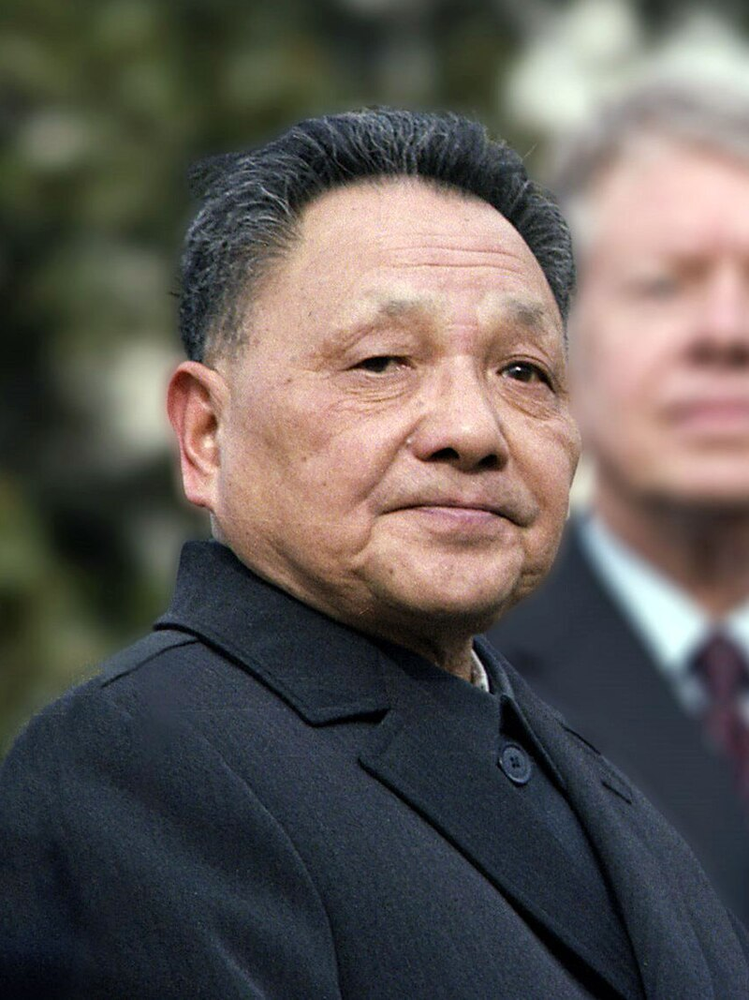
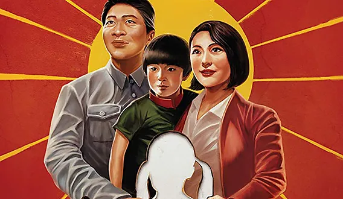
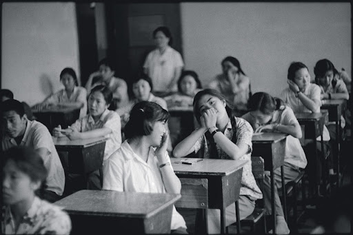
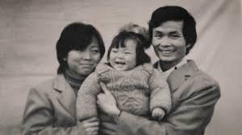

1979: The Beginning

Courtesy of Wikimedia
"We encourage one child per couple. We give economic rewards to those who promise to give birth to only one child." — Deng Xiao-ping, 1979
"The one child family policy was developed and implemented in response to concerns about the social and economic consequences of continued rapid population growth." — National Library of Medicine, 1999

Courtesy of Ron Harvey
Courtesy of Clpro2
1984: Amendments to the Policy
1990s-2000s: Strict Enforcement
"I really don't know how many [babies] I delivered. What I do know is that I've done a total of between 50,000 to 60,000 sterilizations and abortions... But I had no choice; it was the government's policy." — Huaru Yuan, 2019
Huaru Yuan, Courtesy of One Child Nation
"The doctors would inject poison directly into the baby's skull to kill it," Chen says, drawing on recordings he made of interviews with hundreds of women and their families in Linyi. "Other doctors would artificially induce labor. But some babies were alive when they were born and began crying. The doctors strangled or drowned those babies." — Chen Guangcheng, 2021

Courtesy of Ren Shulin

Courtsey of Nanfu Wang